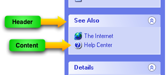
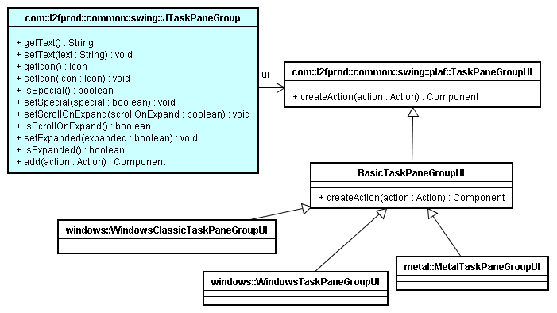

|
Swing has lot of components but there are some components found in everyday application that are missing in Swing. One year ago, I started working on a small project to implement some of these missing components. The project is named "L2FProd.com Common Components" and its source code is hosted here at java.net. Among the components provided by this project, you find a JButtonBar, a JOutlookBar, a JDirectoryChooser, a JFontChooser, a PropertySheet and the component which interests us today, a JTaskPaneGroup. The JTaskPaneGroup is named after the new user interface components brought by Microsoft Windows XP: XP Task Panes a.k.a. Explorer Bars (see it). |
Features |
|
Typically, the JTaskPaneGroup is a container for actions represented by hyperlinks. But more generally, any component can be added in the JTaskPaneGroup. Components are directly added on the JTaskPaneGroup (group.add(myComponent)). PropertiesA JTaskPaneGroup is given a title, an icon, an "expanded" state. To match the Microsoft Windows API, a JTaskPaneGroup can be marked as special - usually it means the header will be painted differently. Expand and Collapse BehaviorWhen the end-user clicks on the JTaskPaneGroup header, the pane toggles its state and hides or shows its content. When collapsed, only the header is visible. The developer can programmatically expand or collapse the component. If the JTaskPaneGroup is contained in a JScrollPane, there is an option (scrollOnExpand) to ensure the JScrollPane will automatically scroll if the JTaskPaneGroup is not completely visible. AnimationDuring collapse, the JTaskPaneGroup shrinks its content until it is no longer visible. The animation can be turned off with UIManager property. When the JTaskPaneGroup is used in an IDE as a JavaBean, the animation is disabled. ActionsIn addition to supporting any components, the JTaskPaneGroup can use add Actions. When an Action (javax.swing) is added to the JTaskPaneGroup, it will automatically create a button looking like an hyperlink. The hyperlink icon, tooltip, text are taken from the Action as a JToolBar does. |
|
Available UIs |
|
The JTaskPaneGroup has 4 available look and feel implementations: Basic, Windows XP, Windows Classic and Metal. The UI takes in charge the painting of the header and the content border. It implements rollover effect when the mouse goes over the header. The JTaskPaneGroup can receive focus. When it has focus, the header is painted with a dotted rectangle (like a focused JButton), the user can expand/collapse the JTaskPaneGroup by pressing the <SPACE> key. |
|
Class Diagram |
|
|  | |
Things I do not like in JTaskPaneGroup |
|
Windows XP plaf does not use the native Microsoft Visual Style (as other Swing components do when using the WindowsLookAndFeel under XP). Thus the look and the color used by Windows XP look are hardcoded in the plaf. I guess I should look into com.sun.java.swing.plaf.windows.XPStyle but this class is package private. To add a component to the JTaskPaneGroup, the developer has to call group.add(component). I wanted to avoid the "contentPane" scheme - group.getContentPane().add(component) - although it is quite simple to workaround the need for getContentPane() as recently implemented in JFrame/JDialog in J2SE 1.5. But not using the contentPane prevents from implementing a better animation on expand/collapse. |
|
JXScrollUp |
|
Part of SwingX, JXScrollUp Extends JXTitledPanel and adds collapsing functionality. It is similar to JTaskPaneGroup. Components are not added directly to the JXScrollUp component but to a contentPane. It makes possible to implement fade in/fade out when the component is expanded/collapsed. The component is in its early stage and does not yet use pluggable look and feel. |
|
What's next? |
|
| Next plan is currently being discussed. | |
Last update: June 6, 2005